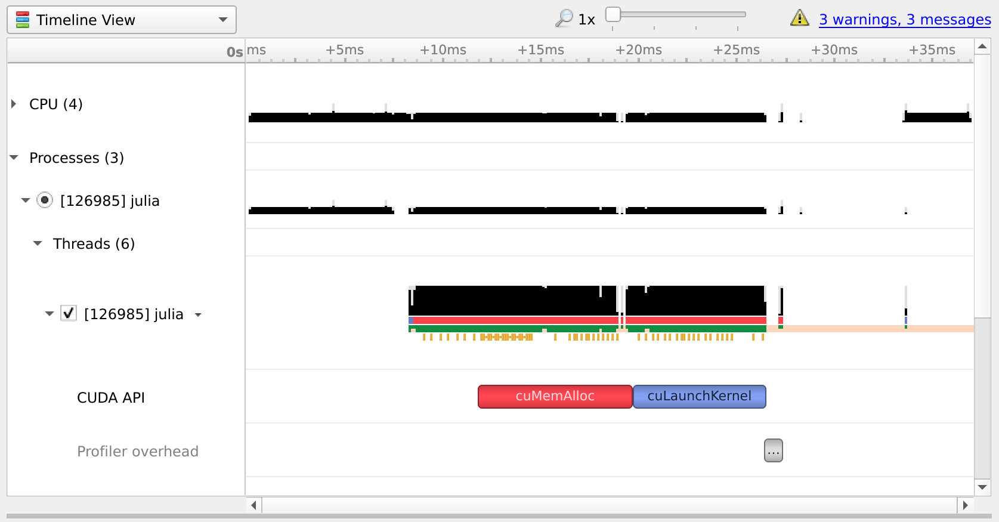
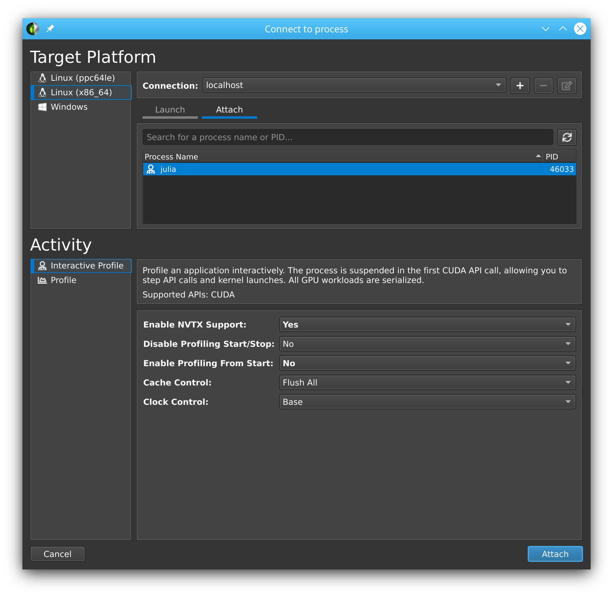
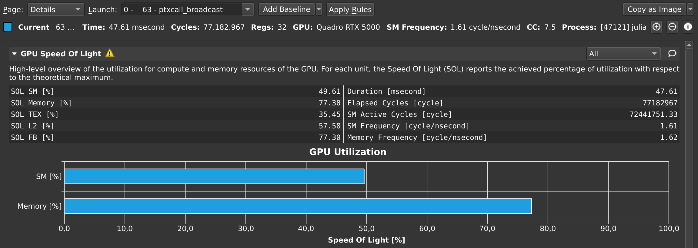
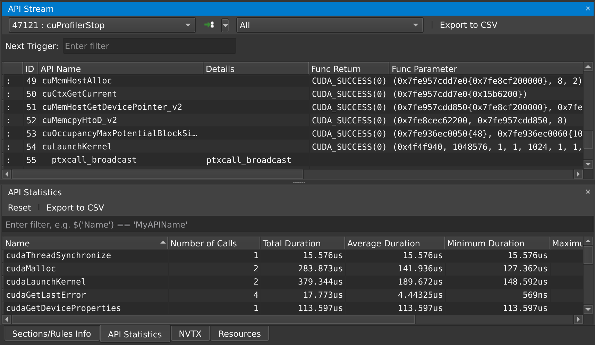

Benchmarking & profiling
Benchmarking and profiling a GPU program is harder than doing the same for a program executing on the CPU. For one, GPU operations typically execute asynchronously, and thus require appropriate synchronization when measuring their execution time. Furthermore, because the program executes on a different processor, it is much harder to know what is currently executing. CUDA, and the Julia CUDA packages, provide several tools and APIs to remedy this.
Time measurements
To accurately measure execution time in the presence of asynchronously-executing GPU operations, CUDA.jl provides an @elapsed macro that, much like Base.@elapsed, measures the total execution time of a block of code on the GPU:
julia> a = CUDA.rand(1024,1024,1024);julia> Base.@elapsed sin.(a) # WRONG!0.008714211julia> CUDA.@elapsed sin.(a)0.051607586f0This is a low-level utility, and measures time by submitting events to the GPU and measuring the time between them. As such, if the GPU was not idle in the first place, you may not get the expected result. The macro is mainly useful if your application needs to know about the time it took to complete certain GPU operations.
For more convenient time reporting, you can use the CUDA.@time macro which mimics Base.@time by printing execution times as well as memory allocation stats, while making sure the GPU is idle before starting the measurement, as well as waiting for all asynchronous operations to complete:
julia> a = CUDA.rand(1024,1024,1024);julia> CUDA.@time sin.(a); 0.046063 seconds (96 CPU allocations: 3.750 KiB) (1 GPU allocation: 4.000 GiB, 14.33% gc time of which 99.89% spent allocating)The CUDA.@time macro is more user-friendly and is a generally more useful tool when measuring the end-to-end performance characteristics of a GPU application.
For robust measurements however, it is advised to use the BenchmarkTools.jl package which goes to great lengths to perform accurate measurements. Due to the asynchronous nature of GPUs, you need to ensure the GPU is synchronized at the end of every sample, e.g. by calling synchronize() or, even better, wrapping your code in CUDA.@sync:
julia> a = CUDA.rand(1024,1024,1024);julia> @benchmark CUDA.@sync sin.($a)BenchmarkTools.Trial: memory estimate: 3.73 KiB allocs estimate: 95 -------------- minimum time: 46.341 ms (0.00% GC) median time: 133.302 ms (0.50% GC) mean time: 130.087 ms (0.49% GC) maximum time: 153.465 ms (0.43% GC) -------------- samples: 39 evals/sample: 1Note that the allocations as reported by BenchmarkTools are CPU allocations. For the GPU allocation behavior you need to consult CUDA.@time.
Application profiling
For profiling large applications, simple timings are insufficient. Instead, we want a overview of how and when the GPU was active, to avoid times where the device was idle and/or find which kernels needs optimization.
Integrated profiler
Once again, we cannot use CPU utilities to profile GPU programs, as they will only paint a partial picture. Instead, CUDA.jl provides a CUDA.@profile macro that separately reports the time spent on the CPU, and the time spent on the GPU:
julia> a = CUDA.rand(1024,1024,1024);julia> CUDA.@profile sin.(a)Profiler ran for 11.93 ms, capturing 8 events.Host-side activity: calling CUDA APIs took 437.26 µs (3.67% of the trace)┌──────────┬───────────┬───────┬───────────┬───────────┬───────────┬─────────────────┐│ Time (%) │ Time │ Calls │ Avg time │ Min time │ Max time │ Name │├──────────┼───────────┼───────┼───────────┼───────────┼───────────┼─────────────────┤│ 3.56% │ 424.15 µs │ 1 │ 424.15 µs │ 424.15 µs │ 424.15 µs │ cuLaunchKernel ││ 0.10% │ 11.92 µs │ 1 │ 11.92 µs │ 11.92 µs │ 11.92 µs │ cuMemAllocAsync │└──────────┴───────────┴───────┴───────────┴───────────┴───────────┴─────────────────┘Device-side activity: GPU was busy for 11.48 ms (96.20% of the trace)┌──────────┬──────────┬───────┬──────────┬──────────┬──────────┬───────────────────────│ Time (%) │ Time │ Calls │ Avg time │ Min time │ Max time │ Name ⋯├──────────┼──────────┼───────┼──────────┼──────────┼──────────┼───────────────────────│ 96.20% │ 11.48 ms │ 1 │ 11.48 ms │ 11.48 ms │ 11.48 ms │ _Z16broadcast_kernel ⋯└──────────┴──────────┴───────┴──────────┴──────────┴──────────┴───────────────────────By default, CUDA.@profile will provide a summary of host and device activities. If you prefer a chronological view of the events, you can set the trace keyword argument:
julia> CUDA.@profile trace=true sin.(a)Profiler ran for 11.71 ms, capturing 8 events.Host-side activity: calling CUDA APIs took 217.68 µs (1.86% of the trace)┌────┬──────────┬───────────┬─────────────────┬──────────────────────────┐│ ID │ Start │ Time │ Name │ Details │├────┼──────────┼───────────┼─────────────────┼──────────────────────────┤│ 2 │ 7.39 µs │ 14.07 µs │ cuMemAllocAsync │ 4.000 GiB, device memory ││ 6 │ 29.56 µs │ 202.42 µs │ cuLaunchKernel │ - │└────┴──────────┴───────────┴─────────────────┴──────────────────────────┘Device-side activity: GPU was busy for 11.48 ms (98.01% of the trace)┌────┬──────────┬──────────┬─────────┬────────┬──────┬─────────────────────────────────│ ID │ Start │ Time │ Threads │ Blocks │ Regs │ Name ⋯├────┼──────────┼──────────┼─────────┼────────┼──────┼─────────────────────────────────│ 6 │ 229.6 µs │ 11.48 ms │ 768 │ 284 │ 34 │ _Z16broadcast_kernel15CuKernel ⋯└────┴──────────┴──────────┴─────────┴────────┴──────┴─────────────────────────────────Here, every call is prefixed with an ID, which can be used to correlate host and device events. For example, here we can see that the host-side cuLaunchKernel call with ID 6 corresponds to the device-side broadcast kernel.
Integrated profiling requires CUPTI 11 or later. CUPTI 10 can crash when profiling kernels that use dynamic parallelism; use an external profiler with older toolkits.
Kernel metrics
CUDA.jl can also collect hardware metrics for every kernel, which help to understand why a kernel is slow. By default, CUDA.@metrics shows how close each kernel comes to the peak throughput of the GPU's compute units and memory subsystems, similar to the "speed of light" section of Nsight Compute:
julia> a = CUDA.rand(1024,1024,1024);julia> CUDA.@metrics sin.(a)Collected hardware metrics for 1 kernel launch on NVIDIA GeForce RTX 5080, executing each kernel 8 times.Kernels were serialized, so these metrics describe each kernel in isolation.┌──────────┬───────┬──────────┬─────────┬────────┬───────┬───────┬────────┬─────────────────────────│ Time (%) │ Calls │ Avg time │ Compute │ Memory │ DRAM │ L2 │ L1/TEX │ Name ⋯├──────────┼───────┼──────────┼─────────┼────────┼───────┼───────┼────────┼─────────────────────────│ 100.00% │ 1 │ 11.78 ms │ 37.7% │ 77.3% │ 77.3% │ 18.3% │ 15.5% │ gpu_broadcast_kernel_c ⋯└──────────┴───────┴──────────┴─────────┴────────┴───────┴───────┴────────┴───────────────────────── 1 column omittedThroughput is relative to the peak sustained rate of each unit during the kernel'sexecution (or the cycles the SMs were active, for L1/TEX). Values of at least 80% are shown in bold.Here, the kernel uses three quarters of the available DRAM bandwidth, but much less of the SMs' compute throughput, so it is limited by memory accesses rather than by computation. A kernel where neither compute nor memory throughput comes close to the peak is typically limited by latency, e.g., because there are not enough threads to hide it.
Other metrics can be selected with the metrics keyword: metrics=:memory reports the amount of DRAM traffic, while a vector of strings collects specific CUPTI metrics. Use ncu --query-metrics to list the metrics your GPU supports. As with the activity profiler, trace=true shows each launch separately instead of summarizing per kernel. The results can also be used programmatically:
julia> p = CUDA.@metrics metrics=["dram__bytes.sum"] sin.(a);julia> p.values1×1 Matrix{Float64}: 8.622541568e9To collect these metrics, CUDA.jl executes kernels one at a time, and replays every kernel as many times as needed to read all counters, restoring the contents of memory in between. This slows down execution considerably, and means that the metrics describe each kernel in isolation, not how kernels overlap in your application. Only kernels launched in the current context are profiled, at most 512 of them, and kernels launched by CUDA graphs are not supported.
Collecting hardware metrics requires CUDA 12.6 Update 2 or later, except for CUDA 12.8 to 13.1, whose profiler does not work. The NVIDIA driver also restricts access to performance counters to administrators by default. See Troubleshooting Nsight Compute for how to lift this restriction.
Source-level sampling
To find out where in a kernel time goes, CUDA.@sample periodically samples which instruction the warps on every SM are executing, and why they are stalled. Like Profile.print, the result shows a tree of source locations for every sampled function. As Julia inlines almost all code into GPU kernels, the children of a location are the functions that were inlined into it:
julia> a = CUDA.rand(Float32, 2^26); b = similar(a);julia> CUDA.@sample b .= sin.(a)gpu_broadcast_kernel_linear(CompilerMetadata<DynamicSize, DynamicCheck, void, CartesianIndi…9291 samples, 7586 stalled (82%): memory 93%, execution 3%, throttle 2%, issue 2%Samples Stalled Self File:Line Function [Stall reasons]──────────────────────────────────────────────────────────── 8704 7269 294 @GPUArrays/src/host/broadcast.jl:62 macro expansion [long_scoreboard… 8343 7029 0 └─ @Base/broadcast.jl:616 getindex [long_scoreboard 95%, short_scor… 8343 7029 0 └─ @Base/broadcast.jl:620 _getindex [long_scoreboard 95%, short_s… 8010 6884 0 ├─ @Base/broadcast.jl:672 _broadcast_getindex [long_scoreboard… 8010 6884 0 │ └─ @Base/broadcast.jl:699 _broadcast_getindex_evalf [long_sc… 7741 6782 7741 │ ├─ CUDACore/src/device/intrinsics/math.jl:30 sin [long_sco… 269 102 269 │ └─ CUDACore/src/device/intrinsics/math.jl:32 sin [wait 50%… 333 145 0 └─ @Base/broadcast.jl:671 _broadcast_getindex [short_scoreboa…... 528 306 528 ? (unknown location) [mio_throttle 38%, wait 28%, short_scoreboard…Total samples: 9291, sampling every 2^14 cycles per SM on NVIDIA GeForce RTX 5080....Every function starts with its name, its number of samples and how many of them were stalled, broken down by the kind of stall (see below). Every row then lists:
Samples: the samples of the code generated for the location, including the code inlined into it;Stalled: how many of those samples were stalled. A sample is stalled when the warp's scheduler couldn't issue any instruction, i.e., when the latency wasn't hidden by other warps;Self: the samples of the location's own code, excluding the functions inlined into it (whatProfile.printcalls the overhead);- the location as
file:lineand the name of the function, followed by the most common reasons for the stalls, as a share of the location's stalled samples.
The stall reasons are those of Nsight Compute, which CUDA.@sample groups into kinds:
| Kind | Stall reasons | Warps wait for |
|---|---|---|
memory | long_scoreboard, short_scoreboard, imc_miss, drain | the results of memory accesses, or of other variable-latency units (short_scoreboard also covers shared memory and special math functions like sin's MUFU instructions) |
throttle | lg_throttle, mio_throttle, tex_throttle, math_pipe_throttle | a full memory queue or a busy pipeline |
sync | barrier, membar, sleeping | other threads, or memory barriers |
execution | wait | the fixed latency of an earlier instruction |
issue | no_instructions, branch_resolving, dispatch_stall, not_selected, selected | instruction fetch, branches, or the scheduler |
Other reasons are shown as other. Stalls are attributed to the instruction that waits, which often is not the one causing the wait: above, the time spent waiting for a to be loaded shows up in sin, which uses the loaded value.
Locations with few samples are hidden: as with Profile.print, the noisefloor keyword hides locations with n <= noisefloor * √N samples, where N is the number of samples of their parent (2 by default). format=:flat lists every location once instead of the tree, with the same columns, sorted by their number of stalled samples:
julia> CUDA.@sample format=:flat b .= sin.(a)gpu_broadcast_kernel_linear(CompilerMetadata<DynamicSize, DynamicCheck, void, CartesianIndi…9037 samples, 7283 stalled (81%): memory 93%, execution 4%, throttle 2%, issue 1%Samples Stalled Self File:Line Function [Stall reasons]──────────────────────────────────────────────────────────── 8463 6958 278 @GPUArrays/src/host/broadcast.jl:62 macro expansion [long_scoreboard… 8133 6753 0 @Base/broadcast.jl:620 _getindex [long_scoreboard 95%, short_scorebo…... 7522 6497 7522 CUDACore/src/device/intrinsics/math.jl:30 sin [long_scoreboard 98%…...To see the samples of every SASS instruction, use CUDATools.code_sass(p). Every sampled instruction is preceded by its samples, stalled samples and most common stall reason, and the source locations the code was generated from are shown as comments, indented by how deeply they were inlined:
julia> p = CUDA.@sample b .= sin.(a);julia> CUDATools.code_sass(p)// gpu_broadcast_kernel_linear(...)// 9291 samples, 7586 stalled (82%): memory 93%, execution 3%, throttle 2%, issue 2%// Samples Stalled Stall reason 41 31 no_instructions 55% /*0000*/ LDC R1, c[0x0][0x37c] 5 0 /*0010*/ S2R R2, SR_TID.X... 15 3 wait 100% /*0110*/ LDG.E R0, desc[UR4][R8.64+-0x4] ; @Base/broadcast.jl:672 _broadcast_getindex ; @Base/broadcast.jl:699 _broadcast_getindex_evalf ; CUDACore/src/device/intrinsics/math.jl:30 sin 3 0 /*0120*/ BSSY.RECONVERGENT B0, `(.L_x_0) 7516 6668 long_scoreboard 100% /*0130*/ FMUL R6, R0.reuse, 0.63661974668502807617...CUDATools.code_ptx(p) does the same for the PTX code that the SASS was generated from. ptxas embeds this code in the cubin, together with a table mapping every SASS instruction to a line of it (the same data Nsight Compute uses to correlate PTX and SASS), so every line shows the exact total of the instructions generated for it, without recompiling anything. The code of functions that ptxas inlined is shown as well:
julia> CUDATools.code_ptx(p)// gpu_broadcast_kernel_linear(...)// 9052 samples, 7256 stalled (80%): memory 94%, execution 3%, throttle 2%, issue 1%// Samples Stalled Stall reason... 128 60 short_scoreboard 92% add.s64 %rd8, %rd3, %rd7; 14 7 wait 100% ld.global.b32 %r4, [%rd8+-4]; // @Base/broadcast.jl:677 _broadcast_getindex // @Base/broadcast.jl:704 _broadcast_getindex_evalf // CUDACore/src/device/intrinsics/math.jl:30 sin 7372 6406 long_scoreboard 100% mul.f32 %r13, %r4, 0f3F22F983; 23 6 wait 100% cvt.rni.s32.f32 %r73, %r13;...The source locations in this view are those of the first SASS instruction generated for a line. Both functions take debuginfo=:none to leave them out, and code_ptx takes raw=true to print the code as embedded, including the empty lines that replace directives like .loc. The PTX code is only available for code compiled with line information, i.e., with a debug level of at least 1 (the default).
In a terminal that supports colors, the number of stalled samples, the stall reasons and the kinds in the summary are colored by kind of stall (memory in red, throttle in yellow, sync in magenta, execution in blue, issue in cyan), source paths and tree guides are dimmed, and hot code (locations or instructions with at least 10% of their function's samples) is shown in bold. When the output is not a terminal, for example when it is written to a file or captured with string(p), the text is the same but without colors, and lines are never cropped, so every row can be found with tools like grep. The JSON output described below contains the same information in a structured form.
All kernels that execute in the current context are sampled, at nearly full speed and concurrently. The program counter of a warp on every SM is sampled once every 2^period cycles (period=14 by default); shorter periods collect more samples, which take longer to process. Sampling requires CUDA 13 or later, a GPU with compute capability 7.5 or higher, and access to the performance counters (see Troubleshooting Nsight Compute).
Source locations come from the line tables that ptxas generates. These sometimes attribute instructions to the wrong inlined function, and code without line information is shown as an unknown location.
Machine-readable output
The results of CUDA.@profile, CUDA.@metrics and CUDA.@sample can also be written as JSON, which is easier to process for scripts and coding agents:
julia> p = CUDA.@profile sin.(a);julia> show(stdout, "application/json", p){"schema_version":1,"view":"summary","raw":false,"duration_ns":3.28700542e7,"events":8,...julia> p = CUDA.@sample b .= sin.(a);julia> show(stdout, "application/json", p){"schema_version":1,"view":"tree","device":"NVIDIA GeForce RTX 5080","period":14,..., "frames":[{"function":"macro expansion","file":".../GPUArrays/3gHjC/src/host/broadcast.jl","line":62},...], "ptx":["\u000a\u000a\u000a\u000a.version 9.4\u000a.target sm_120a\u000a...",...], "functions":[{"name":"gpu_broadcast_kernel_linear(...)",...,"count":9291,"stalled":7586,"ptx":0, "locations":[{"depth":0,"frame":0,"count":8704,"stalled":7269,"overhead":294, "reasons":{"branch_resolving":88,"drain":153,"long_scoreboard":6668,...}},...], "instructions":[{"offset":"0x0000","sass":"LDC R1, c[0x0][0x37c]","frames":[],"ptx_line":17, "count":{"mio_throttle":17,...},"stalled":{...}},...]}]}The JSON contains the same report as the tables, as selected by the trace and raw keyword arguments, with times in nanoseconds and untruncated kernel names. For CUDA.@sample, it contains the rows of the tree or flat view (locations, with their depth and an index into the shared frames), and every sampled instruction with its samples per stall reason and the line of PTX code it was generated from, which indexes the PTX code of its module (ptx); stall kinds are not included, as they follow from the reasons. See Profile.ProfileResults, Profile.KernelProfile and Profile.PCProfile for a description of the contents.
Profiling on Tegra
The integrated profiler relies on CUPTI, which needs additional permissions on Tegra devices (such as the Jetson series). What exactly is required depends on the CUDA version:
- with CUDA 13 and later (typically JetPack 7+), non-root users need read/write access to the GPU profiling device nodes
/dev/nvgpu/*/prof*. These are commonly owned by thedebuggroup on Jetson systems, in which case runsudo usermod -aG debug $USERand log in again. The driver also needs to allow non-admin profiling by loadingnvidiawithNVreg_RestrictProfilingToAdminUsers=0(see Troubleshooting Nsight Compute below). Without the device node access, CUPTI crashes the process outright instead of reporting an error; - with CUDA 10 through 12 (typically JetPack 4 through 6), profiling requires running as root. Membership of the
debuggroup is not enough there: on an AGX Xavier with read/write access to/dev/nvgpu/igpu0/prof, CUPTI 11.8 still refuses every activity kind withCUPTI_ERROR_INSUFFICIENT_PRIVILEGES. Verified with CUDA 10.2, 11.4 and 11.8; CUDA 12 uses the same conservative gate.
The same requirements apply to other CUPTI-based functionality, such as @device_code_sass.
Some optional trace records are unavailable on older Tegra toolkits. CUDA.jl skips unsupported NVTX marker-data records and checks CUPTI's own API version before enabling memory-allocation records. In particular, JetPack 5's local CUDA 11.4 installation ships an older CUPTI, so its integrated profiles omit memory-allocation records.
External profilers
If you want more details, or a graphical representation, we recommend using external profilers. To inform those external tools which code needs to be profiled (e.g., to exclude warm-up iterations or other noninteresting elements) you can also use CUDA.@profile to surround interesting code with:
julia> a = CUDA.rand(1024,1024,1024);julia> sin.(a); # warmupjulia> CUDA.@profile sin.(a);[ Info: This Julia session is already being profiled; defaulting to the external profiler.julia>Note that the external profiler is automatically detected, and makes CUDA.@profile switch to a mode where it merely activates an external profiler and does not do perform any profiling itself. In case the detection does not work, this mode can be forcibly activated by passing external=true to CUDA.@profile.
NVIDIA provides two tools for profiling CUDA applications: Nsight Systems and Nsight Compute for respectively timeline profiling and more detailed kernel analysis. Both tools are well-integrated with the Julia GPU packages, and make it possible to iteratively profile without having to restart Julia.
NVIDIA Nsight Systems
Generally speaking, the first external profiler you should use is Nsight Systems, as it will give you a high-level overview of your application's performance characteristics. After downloading and installing the tool (a version might have been installed alongside with the CUDA toolkit, but it is recommended to download and install the latest version from the NVIDIA website), you need to launch Julia from the command-line, wrapped by the nsys utility from Nsight Systems:
$ nsys launch juliaYou can then execute whatever code you want in the REPL, including e.g. loading Revise so that you can modify your application as you go. When you call into code that is wrapped by CUDA.@profile, the profiler will become active and generate a profile output file in the current folder:
julia> using CUDAjulia> a = CUDA.rand(1024,1024,1024);julia> sin.(a);julia> CUDA.@profile sin.(a);start executedProcessing events...Capturing symbol files...Saving intermediate "report.qdstrm" file to disk...Importing [===============================================================100%]Saved report file to "report.qdrep"stop executedEven with a warm-up iteration, the first kernel or API call might seem to take significantly longer in the profiler. If you are analyzing short executions, instead of whole applications, repeat the operation twice (optionally separated by a call to synchronize() or wrapping in CUDA.@sync)
You can open the resulting .qdrep file with nsight-sys:

If Nsight Systems does not capture any kernel launch, even though you have used CUDA.@profile, try starting nsys with --trace cuda.
NVIDIA Nsight Compute
If you want details on the execution properties of a single kernel, or inspect API interactions in detail, Nsight Compute is the tool for you. It is again possible to use this profiler with an interactive session of Julia, and debug or profile only those sections of your application that are marked with CUDA.@profile.
First, ensure that all (CUDA) packages that are involved in your application have been precompiled. Otherwise, you'll end up profiling the precompilation process, instead of the process where the actual work happens.
Then, launch Julia under the Nsight Compute CLI tool as follows:
$ ncu --mode=launch juliaYou will get an interactive REPL, where you can execute whatever code you want:
julia> using CUDA# Julia hangs!As soon as you use CUDA.jl, your Julia process will hang. This is expected, as the tool breaks upon the very first call to the CUDA API, at which point you are expected to launch the Nsight Compute GUI utility, select Interactive Profile under Activity, and attach to the running session by selecting it in the list in the Attach pane:

Note that this even works with remote systems, i.e., you can have Nsight Compute connect over ssh to a remote system where you run Julia under ncu. (If allowed by the remote system administrator, see the NVIDIA documentation issue webpage for more details. )
Once you've successfully attached to a Julia process, you will see that the tool has stopped execution on the call to cuInit. Now check Profile > Auto Profile to make Nsight Compute gather statistics on our kernels, uncheck Debug > Break On API Error to avoid halting the process when innocuous errors happen, and click Debug > Resume to resume your application.
After doing so, our CLI session comes to life again, and we can execute the rest of our script:
julia> a = CUDA.rand(1024,1024,1024);julia> sin.(a);julia> CUDA.@profile sin.(a);Once that's finished, the Nsight Compute GUI window will have plenty details on our kernel:

By default, this only collects a basic set of metrics. If you need more information on a specific kernel, select detailed or full in the Metric Selection pane and re-run your kernels. Note that collecting more metrics is also more expensive, sometimes even requiring multiple executions of your kernel. As such, it is recommended to only collect basic metrics by default, and only detailed or full metrics for kernels of interest.
At any point in time, you can also pause your application from the debug menu, and inspect the API calls that have been made:

Note that command line execution of Julia scripts also works. Run ncu julia myscript.jl without --mode=launch to profile the entire script. Use the ncu command line arguments if desired. Refer to the NVIDIA documentation for more details.
Troubleshooting Nsight Compute
If you're running into issues, make sure you're using the same version of Nsight Compute on the host and the device, and make sure it's the latest version available. You do not need administrative permissions to install Nsight Compute, the runfile downloaded from the NVIDIA home page can be executed as a regular user.
Kernel sources only report File not found
When profiling a remote application, Nsight Compute will not be able to find the sources of kernels, and instead show File not found errors in the Source view. Although it is possible to point Nsight Compute to a local version of the remote file, it is recommended to enable "Auto-Resolve Remote Source File" in the global Profile preferences (Tools menu -> Preferences). With that option set to "Yes", clicking the "Resolve" button will automatically download and use the remote version of the requested source file.
Could not load library "libpcre2-8
This is caused by an incompatibility between Julia and Nsight Compute, and should be fixed in the latest versions of Nsight Compute. If it's not possible to upgrade, the following workaround may help:
LD_LIBRARY_PATH=$(/path/to/julia -e 'println(joinpath(Sys.BINDIR, Base.LIBDIR, "julia"))') ncu --mode=launch /path/to/juliaThe Julia process is not listed in the "Attach" tab
Make sure that the port that is used by Nsight Compute (49152 by default) is accessible via ssh. To verify this, you can also try forwarding the port manually:
ssh user@host.com -L 49152:localhost:49152Then, in the "Connect to process" window of Nsight Compute, add a connection to localhost instead of the remote host.
If SSH complains with Address already in use, that means the port is already in use. If you're using VSCode, try closing all instances as VSCode might automatically forward the port when launching Nsight Compute in a terminal within VSCode.
Julia in Nsight Compute only shows the Julia logo, not the REPL prompt
In some versions of Nsight Compute, you might have to start Julia without the --project option and switch the environment from inside Julia.
"Disconnected from the application" once I click "Resume"
Make sure that everything is precompiled before starting Julia with Nsight Compute, otherwise you end up profiling the precompilation process instead of your actual application.
Alternatively, disable auto profiling, resume, wait until the precompilation is finished, and then enable auto profiling again.
I only see the "API Stream" tab and no tab with details on my kernel on the right
Scroll down in the "API Stream" tab and look for errors in the "Details" column. If it says "The user does not have permission to access NVIDIA GPU Performance Counters on the target device", add this config:
# cat /etc/modprobe.d/nvprof.conf
options nvidia NVreg_RestrictProfilingToAdminUsers=0The nvidia.ko kernel module needs to be reloaded after changing this configuration, and your system may require regenerating the initramfs or even a reboot. Refer to your distribution's documentation for details.
Nsight Compute breaks on various API calls
Make sure Break On API Error is disabled in the Debug menu, as CUDA.jl purposefully triggers some API errors as part of its normal operation.
NaN values as output in NSight Compute.
Incompatibility between the ncu and Julia CUDA version. Run ncu --version to find which CUDA toolkit is being used. In Julia set CUDA.set_runtime_version!(v"xx.x") to the same version. This version may be lower than the driver version output in nvidia-smi, but not higher.
"Profiling is not supported on this device" error
Nsight Compute does not support the GPU you have. Run ncu --list-chips to verify. Either delete newer versions of CUDA Toolkit and set the environment variable CUDA_PATH to a previous version, or install a newer version.
==ERROR== ERR_NVGPUCTRPERM
Run the terminal as administrator. Refer to the NVIDIA documentation issue webpage for more details. On Tegra devices, also see Profiling on Tegra for the additional device node permissions required there.
==ERROR== Cuda driver is not compatible with Nsight Compute
As the error message suggests, the version of Nsight Compute you are using may be too new for the driver installed on the machine where you are trying to run the GPU application. If possible and if it is compatible with your GPU, upgrade the CUDA driver on the target machine, otherwise downgrade Nsight Compute to a version which supports the CUDA driver installed on the system.
CUDA error: device kernel image is invalid (code 200, ERROR_INVALID_IMAGE)
First of all, make sure your application works normally outside the profiler. If you only get this error while running Julia under Nsight Compute, the problem may be a mismatch between the CUDA toolkit used by the profiler and the one loaded by Julia. In that case, try pointing CUDA.jl to a local CUDA toolkit.
Source-code annotations
If you want to put additional information in the profile, e.g. phases of your application, or expensive CPU operations, you can use the NVTX library via the NVTX.jl package:
using CUDA, NVTXNVTX.@mark "reached Y"NVTX.@range "doing X" begin ...endNVTX.@annotate function foo() ...endFor more details, refer to the documentation of the NVTX.jl package.
Compiler options
Some tools, like Nsight Systems Compute, also make it possible to do source-level profiling. CUDA.jl will by default emit the necessary source line information, which you can disable by launching Julia with -g0. Conversely, launching with -g2 will emit additional debug information, which can be useful in combination with tools like cuda-gdb, but might hurt performance or code size.